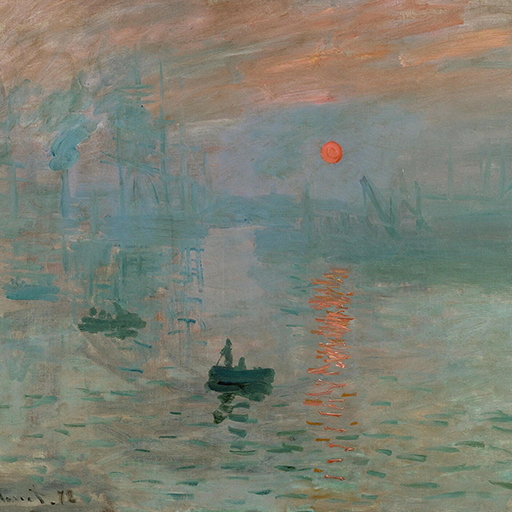

Hexagram 9 – Xiaoxu: Gathering Breeze
Upper: Wind (☴) · Lower: Heaven (☰)

Core Meaning
Your strength is still building and may not be enough for a major push yet. Work patiently on small details, skills, and resources. When enough has accumulated, larger progress will come naturally.
“I build strength patiently and let small steps create lasting change.”
Blessing
May you notice steady improvement in small gains and move without rushing.
Guidance by Life Area
Love
The relationship is growing but is not ready for a major leap. Steady daily care matters more than a large promise right now.
Focus on steady daily care:
- Avoid rushing into a major commitment.
- Fix small recurring problems before they grow.
Career
You may not yet have enough resources for a breakthrough. Close small gaps, build capacity, and divide big goals into manageable steps.
Break large goals into steps you can finish this week:
- Fix small process leaks early.
- Do not expand beyond current resources.
Health
Health often improves through small, repeated actions. Judge progress by longer trends rather than daily changes.
Keep one small health habit every day:
- Judge results by monthly trends.
- Increase intensity only within what your body can adapt to.
Finances
Build gradually through steady saving or small investments. Reduce recurring waste and avoid large high-risk moves for now.
Save or invest a manageable amount each month:
- Cut repeated small waste.
- Avoid large high-risk moves for now.
Relationships
Trust is growing slowly. Keep in touch consistently, remember small details, and do not demand equal effort immediately.
Keep steady contact with important people:
- Remember and follow up on small things they mention.
- Do not demand immediate equal effort.